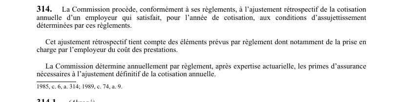

art-314-LATMP : ajustement rétrospectif de la cotisation
Un article du wiki ⚖️ Recueil législatif
En bref
La CNESST procède, selon ses règlements, à l'ajustement rétrospectif de la cotisation annuelle d'un employeur admissible.
- Ajustement rétrospectif selon le coût réel des prestations imputées.
- Primes d'assurance fixées après expertise actuarielle.
🌐 LegisQuébec · 📄 PDF officiel (page 78)
Texte officiel : capture du PDF

Toucher l'image pour l'agrandir🔗 Ouvrir a cette page : LATMP.pdf : page 78 · texte a jour au 20 février 2024
Voir aussi
- art. 313 · faculté : la CNESST peut augmenter la cotisation des employeurs d'un montant déterminé par règlement pour la gestion des dossiers qu'elle tient, lorsque ces frais ne sont pas financés au moyen des taux fixés en vertu des art.
- art. 314.2 · champ d'application : la CNESST paie en un seul versement le montant dû à l'employeur au titre de l'ajustement rétrospectif de sa cotisation annuelle; à l'inverse, l'employeur paie le montant dû à ce même titre, auquel cas la section V (paiement de la cotisation) s'applique.
- 🔢 Sous-article : art. 314.1 · (Abrogé) TDR, «Tha.
- 🔢 Sous-article : art. 314.2 · champ d'application : la CNESST paie en un seul versement le montant dû à l'employeur au titre de l'ajustement rétrospectif de sa cotisation annuelle; à l'inverse, l'employeur paie le montant dû à ce même titre, auquel cas la section V (paiement de la cotisation) s'applique.
- 🔢 Sous-article : art. 314.3 · obligation : commission.
- 🔢 Sous-article : art. 314.4 · l'employeur impliqué dans une opération visée à l'art.
- ↑ Loi : LATMP
Pages qui pointent ici (2)
- art-313-LATMP : majoration pour la gestion des dossiers Recueil législatif
- art-314.2-LATMP : paiement de l'ajustement rétrospectif Recueil législatif